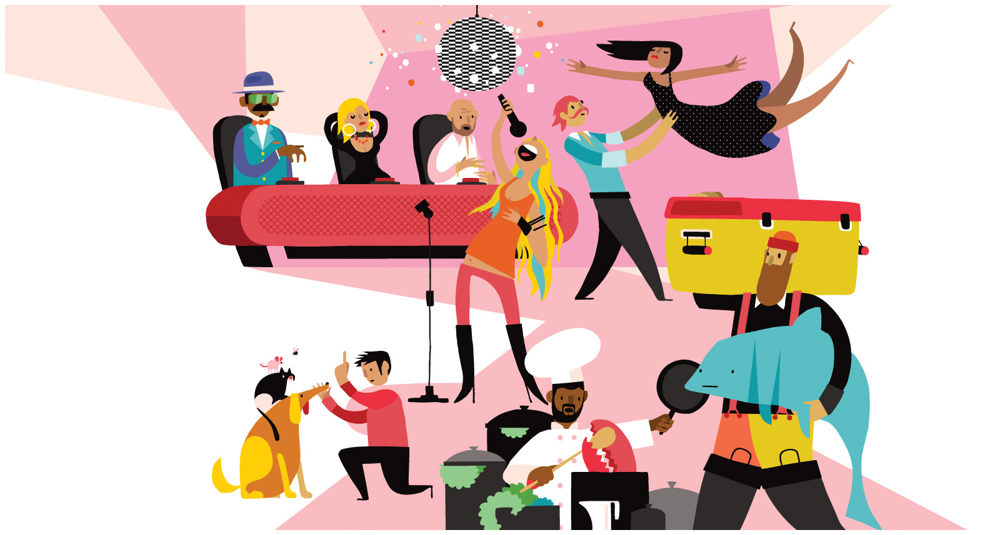

Sociological Perspectives¶
You are embarking on a fascinating journey as you learn to see, think, and analyze yourself and the world around you from a sociological perspective. This lesson invites you to see, think, and analyze from a sociological perspective. It provides a brief overview of the historical and intellectual development of sociology, along with describing how sociology is similar to and different from other social sciences. The lesson ends with a discussion of new theoretical approaches within the discipline. The tools presented here will help you build a foundation for new knowledge and insights into social life.
Learning Objectives¶
By the end of this lesson, you will be able to:
Define key terms related to the discipline of sociology.
Compare the major sociological theories.
Test theories of social norms.

Discuss (Thursday during class):¶
Sould Food Junkies¶

a culinary journey to understand a quintessential American cuisine: Soul Food. Filmmaker Byron Hurt examines the rich history and social significance of foods tied closely to black cultural identity as well as their health implications on the modern American diet. Join Hurt as he investigates the ups and downs of Soul Food and a growing food justice movement to make healthier foods more affordable and accessible. PBS
We start applying our sociological tools to film with Sould Food Junkies. We will watch it together starting Thursday at 9:50am.
Be sure to have the movie ready to roll at the start of class.
Login to the course Slack at 9:45am and say hi to your group!
Before Thursday:
What are some of your memories, feelings, or other associations with food?
Why are eating habits so hard to break? Do you think it’s possible to be addicted to a specific food or to food in general?
Is eating just a matter of personal behavior and preference? When do eating habits—or the effects of eating habits and food choices—step over into the public realm?
Assignments¶
Be sure to hand these in before the deadline
Inquizitive Chapter Set 1 (Tuesday at 9:45am)
Breaching application (Sunday at 11:59pm)
Soul Food Junkies reflection (Sunday at 11:59pm)
Questions¶
Questions about assignments or the lesson?
Post it in the Slack #ask-a-prof channel!
Ask your peers in the Slack #ask-anyone chanel!
Signup for virtual office hours!
Email me or your TA.
Lesson Keywords¶
Sociology
Society
Social Sciences
Sociological Perspective
Culture Shock
Sociological Imagination
Microsociology
Macrosociology
Theories
Paradigm
Positivism
Social Darwinism
Structural Functionalism
Solidarity
Mechanical Solidarity
Organic Solidarity
Anomie
Sacred
Profane
Empirical
Structural
Manifest Functions
Latent Functions
Conflict Theory
Social inequality
Alienation
Critical theory
Critical race theory
Feminist theory
Queer theory
Bureaucracies
Iron Cage
Verstehen
Symbolic Interactionism
Pragmatism
Postmodernism
Modernism
The least you need to know¶